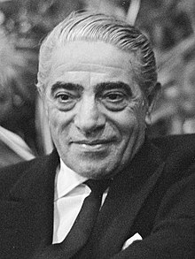

1906-1975
One of the richest people in the 20th century
Aristotle Socrates Onassis (Greek: Αριστοτέλης Ωνάσης; 20 january 1906-15
march 1975),[1]commonly called Ari or Aristo Onassis, was a Greek-Argentine shipping magneate, who
amassed the world"s largest privately owned shipping fleet and was one of the world's richest and most
famous men.

The following list is a time line of Onassis life
- 1906- born in Karatas, Smyrna, Ottoman Empire.
- 1922- He left smyrna during the great fire of smyrna in 1922.
- 1932-He went to buenos Aires, argentia and start working as a telephone operator.
- 1929-He relocated to New York and Started his shipping businesses
- 1946-Onassis married Athina Livanos, duaghter of shipping magnate Stavros G. Livanos and Arietta Zafrikis, on 28 December 1946. The couple had become largely seperated by the mid-1950s.
- 1950-1956- Onasis Had success whaling off the peruvian coast.
- 1953- In monaco he Started to Purchase the shares of Monaco's SMB using the tax haven of Panama and finally take the control of SMB
- 1954- Cancelation of the agreememt between the Saudi government and Aristotle Onasisis to transport saudi oil on his tankers and "in any case, to make the agreement in effective."
- 1956-Aristotle Onassis signed a contract grantinghim the operational rights to the Greek air transport industry. Olympic Airways was founded
- 1957-Onassis and opera prima donna Maria callas embarked on an affair despite the fact that they were both married
- 1966-Rainer of Monaco approved a plan to create 600,000 new shares in SBM reducing stake to under third
- 1968- Onassis ended his relationship with Callas to marry Jacquelone Kennedy, window od U.S president John F. Kennedy
- 1975-Onassis died at age of 69 on March 1975 at the American Hospital of Paris in Neuilly-sur-Seine, France of respiratory failure, a complication of the myasthenia gravis from which he hasbeen suffering during the last years of his life.
Read more about Aristotle Onasis on wikipedia.
s